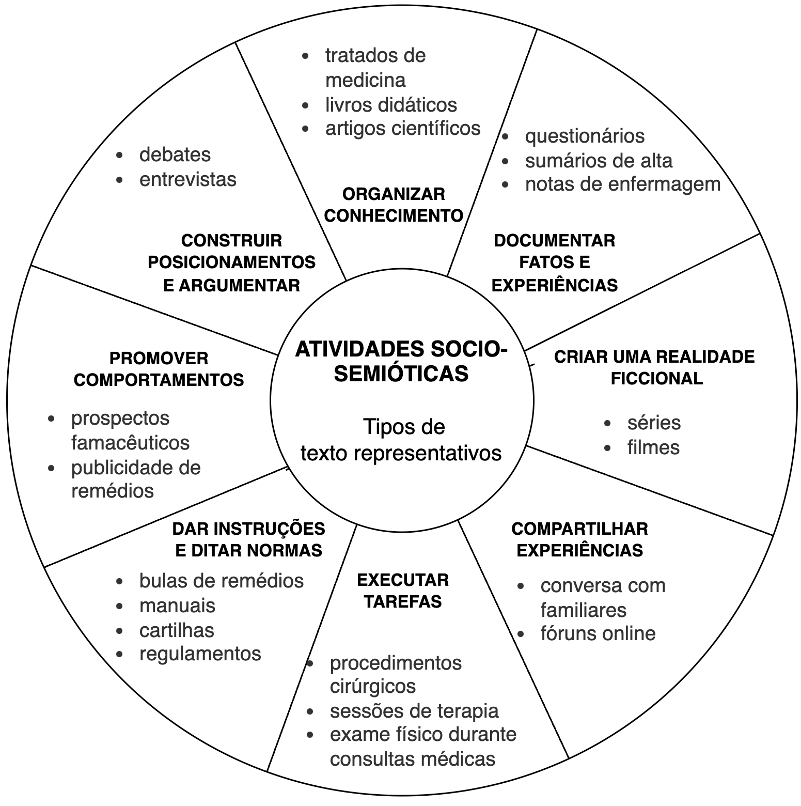
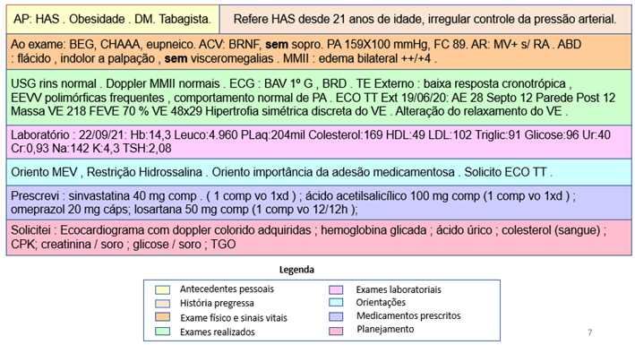
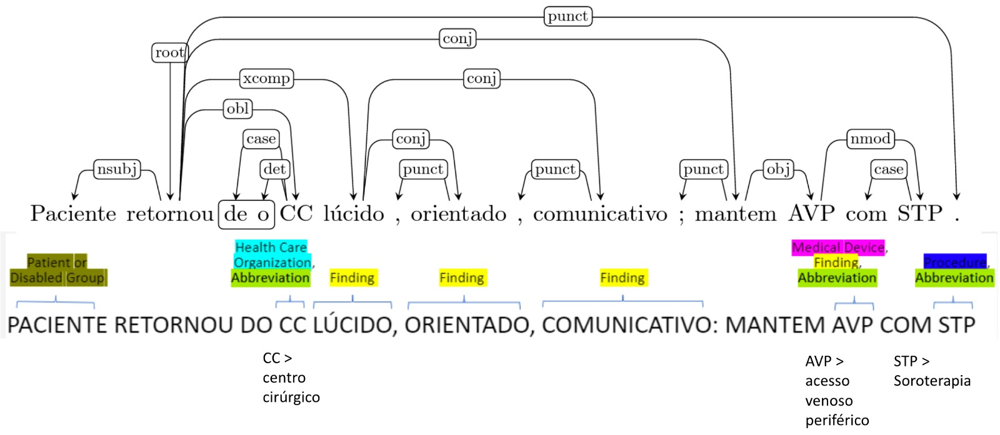
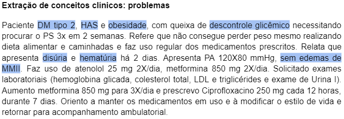
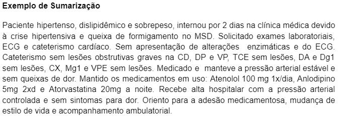

9 PLN na Saúde
9.1 Introdução
A área da saúde é uma das mais importantes em nossas vidas e, nos últimos anos, tem se beneficiado do uso da tecnologia para melhorar o diagnóstico, o tratamento e a gestão de pacientes. A aplicação de Processamento de Linguagem Natural (PLN) tem sido fundamental para avançar nessa área, pois permite a análise de grandes volumes de dados não estruturados gerados em ambientes clínicos (Turchioe et al., 2022).
O domínio da medicina abrange diversos tipos de texto, utilizados para distintas atividades produtoras de significado, que desenvolvemos em nosso convívio social. Chamamos essas atividades de socio-semióticas. Estudos da linguagem baseados em pesquisas antropológicas modelam essas atividades socio-semióticas em oito tipos (Matthiessen et al., 2008; Matthiessen, 2013).
A Figura 9.1 mostra os oito tipos de atividades socio-semióticas e os tipos de texto mais representativos de cada um deles no domínio da medicina. Essas atividades são desenvolvidas por meio de textos escritos e falados, com funções específicas na nossa sociedade. Atividades nas quais a linguagem verbal tem um papel ancilar ou complementar são, por exemplo, a execução de procedimentos cirúrgicos, durante a qual ações podem ser verbalizadas ou não.

Mas, na grande parte das atividades humanas, a linguagem tem um papel constitutivo. Temos desde atividades que envolvem um uso especializado da linguagem para organizar a produção de conhecimento em tratados de medicina, livros didáticos e artigos acadêmicos, até atividades que envolvem um uso menos especializado, como o compartilhamento de experiências no âmbito privado, nas interações entre pacientes e familiares ou entre participantes de fóruns online sobre cuidados em saúde. Para a atividade de instruir e regular o comportamento, temos textos como bulas de medicamentos, cartilhas, normativas, manuais de instrução de equipamentos. Mesmo no domínio da medicina, há também textos pelos quais é construída uma realidade ficcional, como é o caso de séries e filmes que recriam interações em contextos médicos.
Uma atividade socio-semiótica muito relevante no domínio da medicina é documentar fatos e experiências, por meio de questionários aplicados ao paciente, registros de exames clínicos e relatos de profissionais da saúde, nos quais são documentadas percepções sobre a saúde do paciente. Esses textos são conhecidos em PLN como narrativas clínicas e abrangem notas de evolução de enfermagem, sumários de alta, boletins médicos, e notas em texto livre em campos próprios do prontuário eletrônico do paciente. Cada um desses tipos de texto pode oferecer informações valiosas a serem obtidas por meio do PLN mais adequado às características do texto. Artigos acadêmicos, por exemplo, podem ser usados para a extração de ontologias, que são estruturas semânticas que permitem uma representação formal de conceitos, suas propriedades e relações. Essas ontologias podem ser usadas para facilitar a compreensão de termos técnicos e complexos em diferentes áreas da saúde, permitindo que as informações sejam compartilhadas de forma mais clara e precisa (Jiang et al., 2020). Também podemos identificar padrões e relacionamentos entre os dados e a construção de modelos preditivos (Lee et al., 2019).
Narrativas clínicas, por outro lado, são textos não estruturados que oferecem informações valiosas sobre a história do paciente, incluindo seus sintomas, histórico médico, estilo de vida e outras informações relevantes. A mineração desses dados pode ser usada para identificar padrões e relacionamentos entre os dados, permitindo uma melhor compreensão da condição do paciente e a construção de modelos preditivos para prever possíveis complicações ou doenças (Wu et al., 2018).
Assim como nas narrativas clínicas, áudios produzidos por pacientes podem dar pistas de condições de saúde que afetam voz e fala, especialmente as que afetam o sistema respiratório. No Capítulo Classificação de Áudio aplicada à Saúde, o leitor encontra modelos e técnicas de classificação de áudio para a voz e fala de pacientes com problemas respiratórios.
9.2 O texto livre em narrativas clínicas
Com o advento do Registro Eletrônico de Saúde (RES)1, como é denominado no Brasil, ou em inglês, o Electronic Health Record (EHR), a quantidade de dados gerados relativos à atenção aos pacientes aumentou significativamente. Os prontuários eletrônicos podem conter dados estruturados, semiestruturados ou não estruturados, todos eles oferecendo uma grande quantidade de informações sobre o paciente. A mineração desses dados pode ajudar a identificar tendências e padrões em relação a diagnósticos, tratamentos e resultados, permitindo uma melhor gestão do cuidado do paciente e um melhor planejamento da assistência (Shickel et al., 2017).
Os dados clínicos presentes nas narrativas clínicas em texto livre (dados não estruturados) apresentam características únicas que dificultam sua análise e interpretação. Esses dados são frequentemente apresentados em linguagem médica especializada, repleta de termos técnicos, jargões e abreviaturas que podem variar entre os distintos profissionais de saúde. Esses textos também podem conter erros de digitação, ortografia ou gramática, tornando a interpretação ainda mais complexa (Dalianis, 2018). A Figura 9.2 apresenta um exemplo de narrativa clínica adaptada para fins de ilustração. Nela podemos observar que as informações podem ser estruturadas de acordo com categorias destacadas com cores e rotuladas na legenda da figura.

No escopo do que chamamos narrativas clínicas, há diferentes tipos de texto, os quais apresentam desafios específicos em termos do tipo de linguagem e também da relevância das informações registradas. Por exemplo, as notas de evolução de enfermagem podem ser mais descritivas e detalhadas do que outros tipos de texto, enquanto os sumários de alta podem fornecer informações importantes sobre a condição atual do paciente e seu histórico de tratamento. Já as notas de ambulatório podem ser mais informais e fragmentadas, o que dificulta sua análise por modelos treinados com outros tipos de texto em outros domínios. Isso demanda a anotação manual de narrativas clínicas de forma contarmos com modelos mais refinados.
Como todo processo manual, a anotação de narrativas clínicas requer tempo e recursos, o que dificulta a construção de grandes datasets para treinamento de modelos de PLN. Como resultado, a aplicação de técnicas de aprendizado de máquina em dados clínicos sofre limitações pela disponibilidade de dados anotados manualmente (Koleck et al., 2019). Uma saída é utilizar modelos genéricos para pré-processamento, sendo a saída avaliada manualmente. Um exemplo deste tipo de trabalho é a anotação do corpus Depclin-Br, que vem sendo desenvolvida por uma equipe de cientistas da computação da PUCPR e de linguistas da Faculdade de Letras da UFMG. Trata-se de um conjunto de narrativas clínicas já anotadas em termos de entidades no domínio clínico e constituindo o corpus SemClinBr (Oliveira et al., 2022a). Uma parte desse corpus foi anotada morfossintaticamente com base num modelo genérico de português e a anotação revisada manualmente (Oliveira et al., 2022b). Essa primeira parte foi utilizada para refinamento do modelo genérico e anotação automática de um segunda parte do corpus. Uma vez concluída a anotação, dados do corpus DepClinBr, anotado com relações de dependência, podem ser minerados e utilizados para caracterizar as entidades nomeadas previamente anotadas no SemClinBr. A Figura 9.3 ilustra a correlação de anotações morfossintáticas e entidades.

A construção de corpora de narrativas clínicas (dados não estruturados) está sujeita a restrições técnicas e regulatórias, que dizem respeito à privacidade de dados. Essa especificidade limita a capacidade de construção de grandes datasets para treinamento de modelos de PLN (Chen; Chen, 2022). Como foi apontado, para contornar essa limitação, são utilizados modelos genéricos da língua, os quais precisam ser refinados com dados específicos do domínio em um processo de fine-tuning, para melhorar ainda mais sua precisão e relevância (Lee et al., 2019).
A seguir, veremos alguns exemplos de aplicações da PLN em dados clínicos.
9.3 Aplicações de PLN na Saúde
9.3.1 Predição
Uma das principais tarefas de PLN na área médica é a predição, que pode ser aplicada em diversas demandas do cuidado em saúde, como diagnóstico, tratamento, evolução, alta médica hospitalar, detecção de quedas, detecção de depressão e outras. Essas demandas envolvem a classificação de dados clínicos, como narrativas de pacientes, prontuários eletrônicos, relatórios médicos e outros dados de saúde, para ajudar os médicos e outros profissionais de saúde a tomar decisões mais precisas. A predição de diagnóstico, por exemplo, pode ajudar a identificar doenças em estágios iniciais, permitindo tratamentos mais eficazes e prevenindo complicações. A predição de tratamento pode ajudar a personalizar o tratamento para cada paciente, maximizando sua eficácia e minimizando efeitos colaterais. A detecção de quedas e depressão pode ajudar a prevenir acidentes e melhorar a qualidade de vida dos pacientes. Em resumo, a tarefa de predição é essencial para a aplicação bem-sucedida de PLN na área de saúde (Yan et al., 2022).
Alguns exemplos de trabalhos envolvendo predição e classificação em textos clínicos em português são (Gonçalves et al., 2023; Santos et al., 2021a; Silva et al., 2023; Yang et al., 2022).
9.3.2 Desidentificação
Um aspecto crucial na aplicação de PLN na área médica é a desidentificação dos dados dos pacientes, associada a processos de anonimização ou pseudonimização. Esta envolve a remoção de informações que possam identificar o paciente, como nome, endereço, número de telefone e outras informações pessoais. A anonimização é necessária para garantir a privacidade dos pacientes e cumprir as regulamentações de proteção de dados, como a Lei Geral de Proteção de Dados (LGPD) no Brasil2 e a General Data Protection Regulation (GDPR) na União Europeia3.
A anonimização de dados clínicos é um processo desafiador, uma vez que esses dados contêm informações altamente sensíveis e complexas, como histórico médico, sintomas, exames, tratamentos e outros detalhes que podem identificar um paciente. Portanto, é necessário utilizar técnicas avançadas de PLN, como o uso de modelos de linguagem, para remover as informações sensíveis e garantir a privacidade dos pacientes (Jones et al., 2020).
Existem diversas técnicas que podem ser utilizadas na desidentificação dos dados clínicos, dependendo do tipo de informação que deve ser removida e do nível de anonimização desejado, por exemplo:
- Substituição de nomes próprios e outros identificadores pessoais por símbolos ou pseudônimos aleatórios;
- Remoção de informações geográficas específicas, como endereço e CEP;
- Substituição de datas de nascimento e outras informações temporais por intervalos ou idades aproximadas;
- Remoção de informações de contato, como números de telefone e endereços de e-mail;
- Remoção de informações de identificação de instituições, como o nome de hospitais e clínicas.
Além dessas técnicas, também é possível utilizar métodos mais avançados de PLN, como a detecção e remoção de termos médicos específicos ou o uso de técnicas de de-identificação baseadas em modelos de linguagem, que tentam preservar a integridade semântica dos dados, mesmo após a remoção ou substituição das informações pessoais.
A desidentificação dos pacientes permite que os dados clínicos sejam utilizados para fins de pesquisa e análise, sem comprometer a privacidade dos pacientes. Isso é fundamental no avanço da medicina, permitindo a análise de grandes volumes de dados na descoberta de padrões e tendências em doenças, tratamentos e outros aspectos da saúde (Liu et al., 2017). Em (Santos et al., 2021b) temos um exemplo de trabalho para o português nessa tarefa.
9.3.3 Extração de conceitos clínicos
A busca e extração de conceitos clínicos relevantes é uma tarefa essencial na aplicação de PLN na área médica. Essa tarefa envolve a identificação de entidades relevantes nos dados clínicos, como sintomas, diagnósticos, tratamentos, medicamentos e outros termos específicos da área da saúde. Essa identificação geralmente é feita por meio de técnicas de NER (do inglês, Named Entity Recognition) (Capítulo Extração de Informação), que permitem a identificação e classificação automática de entidades em textos não estruturados. A Figura 9.4 ilustra um exemplo de entidades do tipo Problema reconhecidas em uma narrativa clínica elaborada para fins de ilustração.

Além da identificação de entidades, outras técnicas de PLN também podem ser utilizadas para a busca e extração de conceitos clínicos relevantes, como a detecção de negação e a resolução de ambiguidades. A detecção de negação, por exemplo, é útil para identificar quando um sintoma é negado pelo paciente ou um diagnóstico dado pelo médico nega alguma condição. A precisão na detecção de negação é fundamental para a interpretação dos dados clínicos (Nath et al., 2022).
Outra técnica importante na busca e extração de conceitos clínicos é o mapeamento de terminologia, que consiste na associação dos termos clínicos encontrados nos textos com um conjunto de termos padronizados, como a Classificação Internacional de Doenças (CID) ou o Systemized Nomenclature of Medicine (SNOMED CT). Isso permite uma melhor organização e interpretação dos dados clínicos, facilitando a análise e a tomada de decisão médica (Fennelly et al., 2021).
A busca e extração de conceitos clínicos relevantes é fundamental para a análise de dados clínicos em larga escala, permitindo a identificação de padrões e tendências em doenças, tratamentos e outros aspectos da saúde. Além disso, essas técnicas de PLN também podem ser utilizadas para a construção de sistemas de suporte à decisão médica, que auxiliam os profissionais de saúde na escolha de tratamentos mais adequados para cada paciente (Demner-Fushman et al., 2009).
9.3.4 Relações temporais
Uma linha do tempo do paciente é uma representação gráfica que organiza as informações clínicas de um paciente de maneira cronológica. O interesse pela pesquisa em extração de relações temporais provém da característica longitudinal dos dados presentes nos RES. Esses registros contêm múltiplos textos clínicos referentes ao mesmo paciente, escritos em diferentes momentos (Gumiel et al., 2021).
A extração de relações temporais concentra-se na organização sequencial de menções em um texto, sendo essas menções eventos médicos ou expressões temporais.
No contexto clínico, eventos médicos são circunstâncias clínicas de relevância, cujo escopo é delimitado pelo contexto da aplicação. Por exemplo, para a extração de informações significativas para o diagnóstico, pode ser apropriado delimitar eventos como menções a tratamentos passados, sinais, sintomas, medicamentos em uso e exames realizados pelo paciente com os respectivos resultados. Já as expressões temporais envolvem menções de tempo, como a duração de um sintoma ou indicações de quando o paciente realizou determinada cirurgia. É notável que as expressões temporais só têm significado quando associadas a algum evento, enquanto os eventos podem fazer sentido quando relacionados entre si.
A fim de extrair essas menções do texto, são empregadas técnicas de Processamento de Linguagem Natural (PLN), como a Reconhecimento de Entidades Nomeadas. A tarefa de NER consiste em identificar e classificar automaticamente eventos e expressões temporais.
Com eventos e expressões temporais devidamente identificados, aplica-se a extração de relações temporais, uma técnica de PLN que se concentra na conexão de eventos entre si ou com expressões temporais. Desse modo, cada entidade acaba sendo relacionada a um período de tempo específico.
Ao considerar relações temporais no contexto clínico, diversas áreas de pesquisa emergem. Doenças crônicas, por exemplo, apresentam uma natureza longitudinal que torna a temporalidade extremamente relevante, pois existem fluxos de dados do paciente contínuos e extensos, nos quais podem ser extraídos padrões significativos (Sheikhalishahi et al., 2019). A progressão de uma doença e os eventos a ela associados são registrados cronologicamente, onde certos eventos são relevantes apenas em momentos específicos, como problemas médicos identificados durante um exame físico em uma consulta ambulatorial ou sintomas relatados (Sheikhalishahi et al., 2019). No caso de tratamento ineficaz de hipertensão com monoterapia, por exemplo, busca-se terapias com medicamentos combinados. Portanto, algumas informações sobre a progressão de doenças podem ser mais facilmente discernidas por meio da extração de relações temporais (Gumiel et al., 2021).
A aplicação prática de uma linha do tempo na área da saúde pode ser utilizada para analisar a evolução do quadro clínico do paciente ao longo do tempo, identificar possíveis tendências e realizar previsões. Além disso, a linha do tempo do paciente pode ser integrada a sistemas de suporte à decisão médica, contribuindo para a seleção de tratamentos mais adequados para cada paciente.
9.3.5 Sumarização
A sumarização de evoluções clínicas é uma tarefa de PLN que tem como objetivo extrair as informações mais relevantes de um conjunto de dados clínicos, de forma a produzir uma versão resumida e legível dessas informações. A Figura 9.5 exibe um exemplo fictício de uma narrativa clínica sumarizada.

Para realizar a sumarização de evoluções clínicas, são utilizadas técnicas de sumarização automática de texto (Capítulo Sumarização Automática), que podem ser baseadas em abordagens extrativas ou abstrativas4. Na abordagem extrativa, as frases mais importantes do texto original são selecionadas e combinadas para formar um resumo. Já na abordagem abstrativa, o resumo é gerado a partir da síntese das informações do texto original, gerando uma nova versão que não necessariamente contém as mesmas palavras e frases do texto original.
Para realizar a sumarização de evoluções clínicas, são utilizadas técnicas de processamento de linguagem natural, incluindo NER para identificar as entidades relevantes, PoS (Part-of-Speech) para identificar as partes do discurso e gramática do texto e também técnicas de análise sintática e semântica.
Essa tarefa de PLN é muito útil para os profissionais da área da saúde, pois permite que eles analisem brevemente as informações mais importantes dos pacientes, como histórico de doenças, exames realizados, tratamentos prescritos, entre outras informações clínicas (Gulden et al., 2019).
9.4 Recursos de PLN na área clínica
Como vimos, a aplicação de PLN na área clínica tem revolucionado a maneira como os dados médicos são processados e analisados. Com a crescente complexidade das informações clínicas e o volume crescente de dados gerados, a utilização de técnicas avançadas de PLN se torna essencial para extrair insights valiosos e melhorar a qualidade dos cuidados de saúde.
Nesta seção, vamos explorar alguns recursos de PLN em português utilizados no contexto clínico, com ênfase nos corpora e modelos.
9.4.1 Corpora
9.4.1.1 Semclinbr-corpus
SemClinBr (Oliveira et al., 2022a) é um corpus semanticamente anotado que contém um conjunto de dados clínicos em português brasileiro, com anotações detalhadas.
O corpus é composto por 1.000 notas clínicas provenientes de diversas especialidades médicas, tipos de documentos e instituições. Estas notas foram cuidadosamente anotadas para incluir informações valiosas sobre entidades e relações dentro dos textos clínicos.
SemClinBr inclui 65.117 entidades e 11.263 relações anotadas. As anotações cobrem uma variedade de aspectos clínicos, como condições médicas, medicamentos e procedimentos, além de incluir dicionários de negação e abreviações médicas.
A qualidade das anotações foi avaliada de forma intrínseca e extrínseca. A avaliação mostrou um alto nível de concordância entre anotadores, com índices variando de 0,71 a 0,92, e os resultados obtidos ao aplicar o corpus em tarefas de PLN demonstraram a utilidade e a confiabilidade das anotações.
SemClinBr fornece um recurso valioso para a pesquisa em PLN clínico, ajudando a desenvolver e avaliar novos algoritmos e técnicas.
Sendo um dos primeiros corpus clínico disponível em português brasileiro, o SemClinBr preenche uma lacuna significativa no campo e promove avanços na pesquisa biomédica e no desenvolvimento de tecnologias de PLN para o idioma.
O corpus está disponível para pesquisa acadêmica e pode ser solicitado neste endereço: https://github.com/HAILab-PUCPR/SemClinBr.
9.4.1.2 Detecção de Quedas
O corpus Detecção de Quedas (Santos et al., 2019) é projetado para auxiliar na detecção de incidentes de quedas, que são uma das maiores categorias de relatórios de eventos adversos em hospitais.
A detecção eficiente desses eventos é crucial para melhorar a compreensão dos incidentes e, consequentemente, a qualidade do cuidado ao paciente.
O corpus contém 1.078 notas de progresso desidentificadas, que são registros clínicos detalhados sobre os pacientes durante sua estadia no hospital.
As notas foram anotadas para identificar incidentes de quedas, permitindo a avaliação de modelos de linguagem na tarefa de detectar tais eventos.
A avaliação do corpus foi realizada com vários modelos de linguagem, incluindo redes neurais recorrentes (RNNs) de última geração. Os experimentos mostraram que a abordagem de aprendizado profundo superou os trabalhos anteriores na detecção de eventos de queda.
O corpus anotado está disponível para fins de replicação em https://github.com/nlp-pucrs/fall-detection, permitindo que outros pesquisadores reproduzam os experimentos e utilizem os dados para melhorar os sistemas de detecção de eventos adversos.
9.4.1.3 Casos Clínicos - Neurologia
O corpus de Casos Clínicos - Neurologia (Lopes et al., 2019) é formado por 281 textos de casos clínicos coletados dos números 1 e 2 do volume 17 da revista clínica Sinapse, publicada pela Sociedade Portuguesa de Neurologia.
Os textos foram pré-processados com ferramentas do NLPPort, um kit de ferramentas de PLN para o português, baseado no OpenNLP.
Cada texto foi tokenizado com TokPort, etiquetado com TagPort e lemas para cada par token-PoS foram obtidos com LemPort. Após o pré-processamento, foi realizada a anotação manual de entidades nomeadas clínicas.
O corpus está disponível para pesquisa acadêmica e pode ser solicitado neste endereço: https://github.com/fabioacl/PortugueseClinicalNER.
9.4.2 Modelos
9.4.2.1 BioBERTpt
Os modelos da família BioBERTpt (Schneider et al., 2020) são modelos adaptados do modelo BERT multilíngue para o português brasileiro, com foco em tarefas de PLN nas áreas clínica e biomédica.
Essas versões foram ajustadas utilizando um corpus de narrativas clínicas e artigos científicos biomédicos em português.
Os modelos foram avaliados em duas coleções anotadas de textos clínicos para reconhecer entidades nomeadas. Comparado com modelos BERT existentes, o BioBERTpt apresentou uma melhoria de 2,72% no F1-score, superando o modelo base em 11 de 13 entidades avaliadas.
O desenvolvimento de BioBERTpt é um passo importante na área, ao melhorar o desempenho de tarefas de PLN em idiomas com menos recursos e pesquisa, como o português brasileiro, que frequentemente é sub-representado em modelos de PLN avançados.
Os modelos estão disponíveis em: https://huggingface.co/pucpr.
9.4.2.2 BioBERTptRT
O BioBERTptRT (De Oliveira et al., 2024) é uma versão do BioBERTpt projetado para a classificação de sentenças de notas clínicas, categorizando sentenças de acordo com o padrão SOAP (Subjetivo, Objetivo, Avaliação e Plano), o que ajuda a estruturar e organizar as notas clínicas de maneira mais eficaz.
O modelo foi treinado e ajustado usando uma base de dados privada de 10.000 registros de saúde anonimizados contendo 234.673 notas clínicas, divididas em 1.183.345 sentenças únicas. Além disso, 100.021 sentenças foram rotuladas manualmente para uso no ajuste fino dos modelos.
Esse treinamento especializado ajudou o modelo a entender melhor o contexto e a terminologia médica em português.
O modelo BioBERTptRT demonstrou um desempenho superior em comparação com outros modelos BERT em português, alcançando resultados superiores em precisão, acurácia, revocação e F1-score na tarefa de classificação de sentenças.
9.4.2.3 GPT2-Bio-Pt
GPT2-Bio-Pt (Schneider et al., 2021) é um modelo baseado em GPT-2 (Generative Pre-trained Transformer 2) especializado para o idioma português, desenvolvido para apoiar tarefas de PLN na área clínica e biomédica.
Um GPT-2 genérico em português foi ajustado para o domínio biomédico com a técnica de transferência de aprendizado, utilizando textos biomédicos escritos em português.
O modelo GPT-2 ajustado para o domínio biomédico foi testado em um conjunto de dados público, manualmente anotado para a tarefa de detecção de quedas de pacientes. O modelo especializado demonstrou um desempenho superior ao modelo GPT-2 genérico em português, com um aumento de 3,43 pontos em F1-score.
O modelo está disponível para pesquisa acadêmica e pode ser acessado neste endereço: https://huggingface.co/pucpr/gpt2-bio-pt.
9.4.2.4 BERT para Classificação ICD-10
(Coutinho; Martins, 2022) desenvolveram um modelo BERT especializado para a atribuição de códigos ICD-10 (Classificação Internacional de Doenças) para causas de morte, usando descrições em texto livre.
O modelo foi projetado para atribuir códigos ICD-10 a causas de morte com base em descrições de texto livre encontradas em certificados de óbito, relatórios de autópsia e boletins clínicos fornecidos pelo Ministério da Saúde de Portugal.
A abordagem inclui um procedimento de pré-treinamento que incorpora conhecimento específico do domínio clínico, permitindo a adaptação do BERT para a tarefa de codificação ICD-10.
O modelo também adotou uma estratégia de ajuste fino para lidar com o problema de desequilíbrio de classes, que é comum em tarefas de classificação quando algumas categorias são muito mais frequentes do que outras.
9.4.2.5 CardioBERTpt
CardioBERTpt (Schneider et al., 2023) é um modelo baseado em BERT adaptado especificamente para tarefas de PLN na área da cardiologia em português.
O modelo CardioBERTpt aproveita a transferência de aprendizado a partir de registros eletrônicos de saúde de um hospital terciário brasileiro especializado em doenças cardiológicas. Esta abordagem permite que o modelo capture nuances e terminologias específicas do domínio cardiológico.
Esse modelo demonstrou que a representatividade dos dados e um volume alto de dados de treinamento podem melhorar significativamente os resultados para tarefas clínicas.
O modelo está disponível para pesquisa acadêmica e pode ser acessado neste endereço: https://huggingface.co/pucpr-br/cardiobertpt.
9.5 Para onde estamos caminhando?
Embora a tecnologia de PLN na área clínica tenha avançado significativamente nos últimos anos, ainda existem vários desafios a serem superados. Alguns desses desafios incluem:
- Garantir a qualidade dos dados clínicos utilizados para treinar e testar os modelos de PLN, incluindo a devida anonimização e a padronização dos termos utilizados, assegurando a ética e a privacidade dos dados clínicos;
- Desenvolver modelos de PLN capazes de lidar com textos clínicos mais complexos e heterogêneos, como notas de enfermagem, laudos médicos e textos escritos por pacientes;
- Integrar os modelos de PLN em sistemas de informação em saúde existentes, garantindo a interoperabilidade e a segurança dos dados;
- Garantir a aceitação e a adoção dos modelos de PLN pelos profissionais de saúde, demonstrando sua utilidade e eficácia na prática clínica.
É importante destacar que, embora o PLN possa ser útil na análise e interpretação de dados clínicos, ele não pode substituir a experiência e o conhecimento clínico de um médico ou de outros profissionais de saúde. A tecnologia pode ser uma ferramenta valiosa para auxiliar na tomada de decisões clínicas, mas não pode substituir o julgamento clínico humano. Ressalta-se que o desenvolvimento de tecnologias de PLN na área clínica seja visto como uma forma de complementar e melhorar o cuidado ao paciente, e não como uma substituição aos profissionais de saúde.
No Sistema Único de Saúde (SUS), as informações dos usuários são coletadas e armazenadas por meio do Prontuário Eletrônico do Cidadão (PEC). Nele, há campos pré-determinados que podem ser preenchidos com texto livre.↩︎
Lei Geral de Proteção de Dados Pessoais (LGPD), Lei nº 13.709/2018. Disponível em: https://www.gov.br › pt-br › acesso-a-informacao › lgpd↩︎
Data protection in the EU. Disponível em: https://commission.europa.eu/law/law-topic/data-protection/data-protection-eu_en↩︎
Para projetos de sumarizadores em português, visite: https://sites.icmc.usp.br/taspardo/sucinto/↩︎